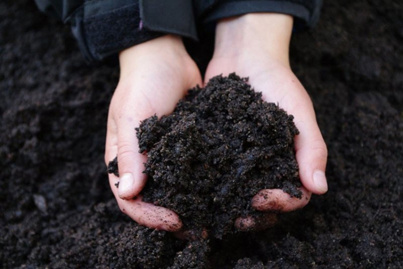

Черноземы

Отвечая на вопрос огородников, какие почвы особенно богаты перегноем, всегда называют именно чернозем. Его плодородность обусловлена высоким содержанием гумуса (4-10%), а также минералов.
В его состав входит:
- Кальций (70%)
- Фосфор
- Аммиак
- Магний (20%)
- Гуминовые кислоты (15%)
- Фософорные соединения
Основные подвиды чернозема: кислые, нейтральные и щелочные. В зависимости от степени засоления бывают обычные, карбонатные и солонцеватые типы.
Зернисто-комковатая структура позволяет грунту удерживать влагу в прикорневом пространстве. Превосходная рыхлость обеспечивает надлежащую циркуляцию кислорода. Кроме прочего, в глубинных слоях земли постоянно проходят сложные химические реакции, которые обеспечивают микрофлору теплом. Подходит для выращивания всех культивируемых растений.
Чернозем определяют по жирному черному отпечатку, который остается после сжатия субстрата в ладони. На ощупь он жирный с маслянистым блеском.
Как и остальные почвы, чернозем подвержен истощению, особенно при постоянном использовании. В таком случае каждые 2-3 года обязательно вносят органические удобрения (перегной, золу, компост). При этом на участке рекомендует ежегодно высевать сидераты.